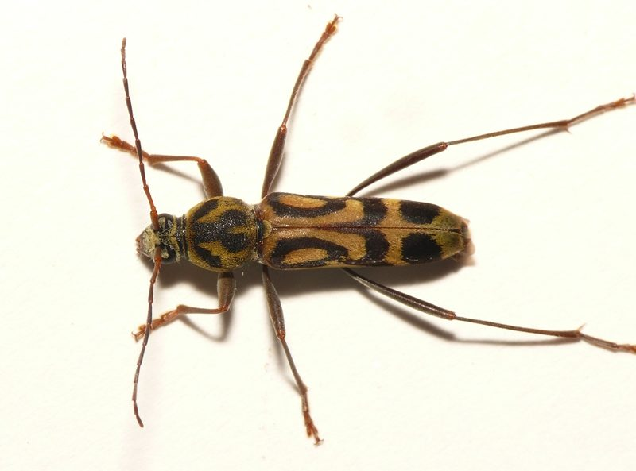

बैम्बू लॉन्गहॉर्न बीटलBamboo Longhorn Beetle
Chlorophorus annularis · Cerambycidae · INS-0294

- Scientific name वैज्ञानिक नाम
- Chlorophorus annularis (Fabricius, 1787)
- Family कुल
- Cerambycidae
- Hindi हिंदी
- बैम्बू लॉन्गहॉर्न बीटल
- Local names स्थानीय नाम
- bamboo longhorn beetle
- Status here यहाँ की स्थिति
- native
- Movement आवागमन
- Resident, here all year
- Known from कहाँ दर्ज
- Others have published records from the wider Awadh–Purvanchal plain, none yet from Basti–Ayodhya अवध–पूर्वांचल से दूसरों के प्रकाशित अभिलेख, बस्ती–अयोध्या से अभी नहीं
- IUCN IUCN
- not evaluated
- Review समीक्षा
- not yet reviewed
When to look कब देखें
Expected mainly in April, May, June, July, August. मुख्यतः अप्रैल, मई, जून, जुलाई, अगस्त में अपेक्षित।
बैम्बू लॉन्गहॉर्न बीटल / Bamboo Longhorn Beetle
Chlorophorus annularis (Fabricius, 1787) — Cerambycidae
बैम्बू लॉन्गहॉर्न बीटल — पीले और काले छल्लों वाला एक सुंदर भौंरा, जिसकी सुंडी सूखे बांसों के भीतर सुरंग बनाकर उसे खोखला कर देती है।
Quick Identification त्वरित पहचान
| Feature | Description |
|---|---|
| Coloration | Densely clothed in bright sulfur-yellow pubescence with black markings |
| Pronotum | Rounded, marked with central black spot and oblique lateral spots |
| Elytral pattern | Complex pattern of black spots and curved transverse bands on yellow ground |
| Antennae | Reddish-brown, filiform, approximately half the length of the body |
| Elytra apex | Squarely truncate, armed with four distinct small teeth at outer angles |
| Legs | Slender, reddish-brown to blackish, middle and hind femora elongate |
Field tip: Bright yellow tiger-banded longhorn beetle recognized by its yellow-and-black pattern, found around seasoned bamboo timber piles in early summer.
हिंदी: चटख पीली रोएँदार पीठ पर काली पट्टियां और गोल धब्बे, तथा सूखे बांसों पर तेजी से दौड़ना इसकी मुख्य पहचान है।
Morphology आकारिकी
Measurement not available in consulted sources.
A slender, cylindrical, medium-sized cerambycid beetle clothed above in dense, bright sulfur-yellow or greenish-yellow velvety pubescence variegated with dark brown or velvety black markings. The head is relatively small, vertical in front, and covered with yellow hairs; the compound eyes are deeply emarginate near the antennal insertions. Antennae are filiform, slender, reddish-brown with dusky apical segments, about half the length of the body in females and slightly longer in males.
The prothorax is subglobose, as wide across the middle as the base of the elytra, yellow-pubescent, marked characteristically with three velvety black spots: one median longitudinal spot that is bifurcated posteriorly, and an obliquely oval spot on each side before the middle, plus a small dark spot near the base.
The elytra are elongate, subparallel-sided, and squarely truncate at the apex with small denticles. The elytral pattern is distinctive: each elytron bears an anterior elliptical black band running from near the shoulder to the middle third, a transverse median black band curved forwards along the suture and joined obliquely to the front band, and a discrete rounded black spot positioned midway between the median band and the apex. Underneath, the thoracic and abdominal sterna are covered in dense whitish pubescence.
हिंदी: इसका शरीर बेलनाकार, छाती गोल पीली जिस पर तीन काले धब्बे और पंखों पर मुड़ी हुई काली धारियां होती हैं। पिछले हिस्से पर चार छोटे दांत होते हैं।
Behaviour & Ecology व्यवहार और पारिस्थितिकी
Chlorophorus annularis is a diurnal beetle intimately associated with dead and dying bamboo. Adults emerge from infested culms in late spring and early summer (May to July). They are active fliers during warm, sunny hours, frequently visiting blossoms of flowering trees to feed on pollen and nectar, or running actively over stacks of seasoned bamboo poles.
Females seek out cut or seasoned bamboo canes in storage yards and rural habitations. Using her ovipositor, she inserts eggs into cracks, harvest cuts, or exposed nodal tissues of dry culms. Newly hatched larvae burrow directly into the bamboo wall, chewing extensive longitudinal galleries filled with fine, tightly packed wood dust (frass). Infested bamboo poles exhibit structural weakness and distinctive exit holes.
हिंदी: यह धूप में उड़ने वाला भौंरा है। मादा सूखे बांसों की दरारों में अंडे देती है। इसके बच्चे बांस के भीतर सुरंग बनाकर उसे लकड़ी के बुरादे से भर देते हैं।
Life Cycle / Phenology जीवन चक्र
Development is slow, and can take longer in very dry seasoned timber. Larvae feed exclusively within the woody bamboo walls throughout the monsoon, winter, and spring.
In late spring (April–May), the mature larva constructs an oval pupal chamber plugged with fibrous shavings near the outer surface of the bamboo culm. Following pupation in late spring, the adult beetle chews a neat circular or slightly oval exit hole through the bamboo rind and emerges into the open air.
हिंदी: इसका विकास धीमा होता है। लार्वा बांस के अंदर लकड़ी खाता रहता है और गर्मियों में गोल छेद काटकर बाहर निकलता है।
Host Plants or Prey आहार
Larvae are specialized wood borers of dry and seasoned bamboo poles and thatched structures, often infesting timber alongside wood-nesting termites. Adults feed on flower nectar and pollen of roadside shrubs.
हिंदी: इसकी सुंडी सूखे बांस को खाती है। वयस्क भौंरे फूलों का पराग और मकरंद पीते हैं।
Predators / Natural Enemies शत्रु
Woodpeckers, particularly the black-rumped flameback, detect larvae inside dry bamboo canes and excavate them with their chisel bills. Predatory checkered beetles (Cleridae) and parasitic braconid wasps enter larval galleries to prey upon larvae and pupae. Adults are captured by robber flies, praying mantises, black drongos, and garden lizards.
हिंदी: कठफोड़वे बांस में छेद करके इसके लार्वा को निकाल लेते हैं। शिकारी कीड़े और ततैये भी इसके बच्चों को खाते हैं।
Agricultural / Human Relevance कृषि प्रासंगिकता
In rural India, Chlorophorus annularis is known as a major pest of harvested bamboo. Infestation damages bamboo fencing, thatched roofing rafters, bamboo scaffolding, and handicraft materials.
हिंदी: यह कटे हुए बांस का बड़ा शत्रु है। छप्परों और बाड़ों के बांसों को यह अंदर से कमजोर कर देता है।
Expected Locally स्थानीय रूप से अपेक्षित
Not a field record. Written from published accounts for eastern Uttar Pradesh. No confirmed local sighting yet — if you have seen it, that is what the atlas needs.
अभी तक स्थानीय पुष्टि नहीं। यह विवरण प्रकाशित स्रोतों से है, किसी अवलोकन से नहीं।
GBIF holds published records from the wider Awadh–Purvanchal plain, none yet from Basti–Ayodhya. Expected throughout rural Basti and Ayodhya around village bamboo groves, stored pole yards, and old thatched roofs. Look in May and June around seasoned bamboo pole stacks and thatched roofs on sunny afternoons; adults run rapidly with jerky movements. A first record would be a photograph of the adult with place and date, sent through the About page.
Distribution वितरण
Global range: Native across South and East Asia, including India, Nepal, Sri Lanka, Myanmar, Thailand, China, and Japan; introduced via timber trade to North America and Europe.
In India: Widespread across the Indian subcontinent wherever bamboo grows or is commercially utilized.
In Uttar Pradesh: Recorded from across central and eastern districts, particularly in forestry depots and rural bamboo-growing tracts.
In Basti district / eastern UP: Expected throughout the district around village homesteads, riverine bamboo patches, and rural markets.
हिंदी: यह भारत और पूर्वी एशिया का मूल निवासी है। उत्तर प्रदेश में जहां भी बांस की खेती या उपयोग होता है, वहां यह पाया जाता है।
Research Questions शोध प्रश्न
- What percentage of rural bamboo roofing rafters in Basti district suffer structural damage from Chlorophorus annularis attack?
- Does the traditional water-curing of Dendrocalamus strictus culms eliminate larval infestation under local conditions?
- What is the peak flight window of emerging adults relative to pre-monsoon temperature spikes in Awadh?
- क्या ग्रामीण क्षेत्रों में बांस के खंभों पर इस भौंरे के निकास छिद्रों से बांस की मजबूती में भारी कमी आती है?
- क्या बांस के भंडारण में रासायनिक उपचार के बिना प्राकृतिक नीम के तेल से इसका बचाव संभव है?
Similar Species मिलती-जुलती प्रजातियाँ
| Species | Key Difference | हिंदी | |
|---|---|---|---|
| Chlorophorus varius (Variable Longhorn Beetle) | Different elytral markings; C-shaped yellow fascia; primarily infests deciduous trees rather than bamboo | चितकबरा लॉन्गहॉर्न | |
| Xylotrechus smei (Bark Borer Beetle) | Greyish-brown with yellow markings; broader body; infests logs of sal, [[shisham\ | shisham]], and mango | छाल छेदक भौंरा |
| Dinoderus minutus (Bamboo Borer) | Very small, cylindrical, brown bostrichid beetle; lacks long antennae and yellow tiger markings | छोटा घुन |
Field rule: Slender cerambycid beetle with bright sulfur-yellow velvety pubescence, three black pronotal spots, and curved black bands on elytra, found on bamboo = Chlorophorus annularis.
Taxonomy & Classification वर्गीकरण
Original description. Described by Johan Christian Fabricius (1787) in Mantissa Insectorum, vol. 1, p. 156, under the name Callidium annulare. Later placed by Gahan (1906) under Caloclytus annularis before being stabilized in Chlorophorus Chevrolat. The specific epithet annularis refers to the ring-like or banded markings on the elytra.
Subspecies. Monotypic — no subspecies are currently recognized.
Family and order placement. Order Coleoptera, suborder Polyphaga, family Cerambycidae (longhorn beetles), subfamily Cerambycinae, tribe Clytini. Clytine beetles are renowned for wasp-mimicking yellow and black coloration.
IUCN status rationale. Not evaluated. Common and abundant across its native range, benefiting from widespread human use of bamboo.
हिंदी: इसे 1787 में फैब्रिकियस ने Callidium annulare नाम दिया था। यह सिराम्बायसिडी परिवार का सदस्य है।
Photo Gallery फोटो गैलरी
No photos yet — add field photos to media/species/bamboo_longhorn_beetle/ and run node scripts/sync_photos.js.
Photos needed आवश्यक फोटो
- [ ] Adult on bamboo showing yellow-and-black pattern on pronotum and elytra (बांस पर बैठे भौंरे की तस्वीर)
- [ ] Emergence hole and larval frass on seasoned bamboo pole (बांस में बने छेद और बुरादे की तस्वीर)
References संदर्भ
- Fabricius, J. C. (1787). Mantissa Insectorum. Vol. 1. Hafniae, 348 pp. (as Callidium annulare).
- Gahan, C. J. (1906). The Fauna of British India, Including Ceylon and Burma: Coleoptera: Cerambycidae. Vol. 1. Taylor and Francis, London, pp. 261–262. (as Caloclytus annularis).
- GBIF Occurrence Data — Chlorophorus annularis, India (2025).
Source file: species/fauna/insects/bamboo_longhorn_beetle.md